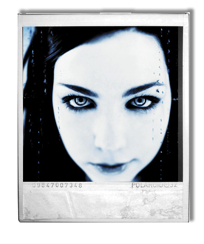
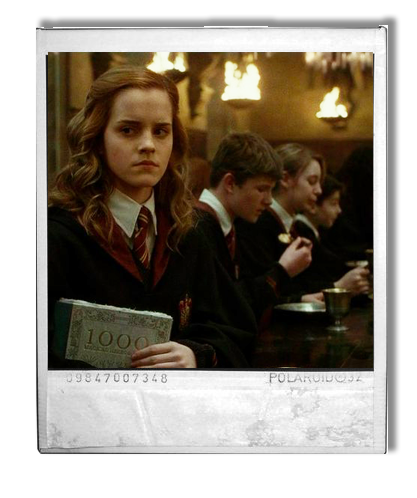
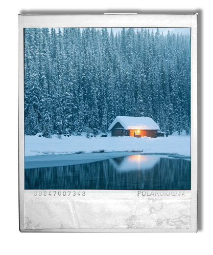

Радио жанра Post-rock.
Один из наших самых первых проектов

Сайт распределяющей шляпы являет из себя тест распределения по факультетам хогвартса (разработан нами по заказу фанатов вселенной HP)

Наш сайт с говорящим названием "relaxside" представляет из себя интерактивную прогулку с 3d звуками окружения, (рекомендуется посещать его с включенным звуком)